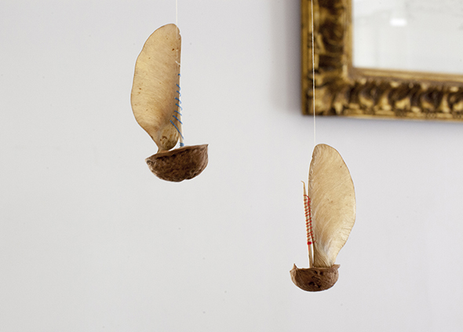
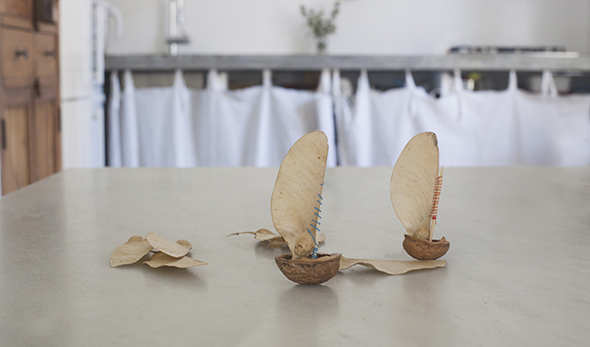
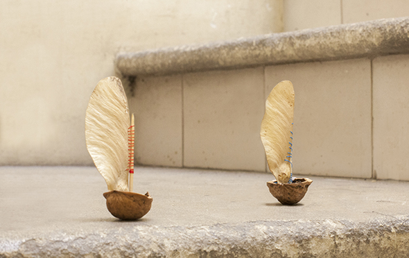

Estos barquitos quedan mejor como móvil. Si te gustan más coloridos, puedes pintar las semillas, como en esta entrada. Los palillos se sujetan en la nuez con cera (mira esta entrada), y con una aguja se atraviesan las semillas secas de arce para unirlas al palillo.
